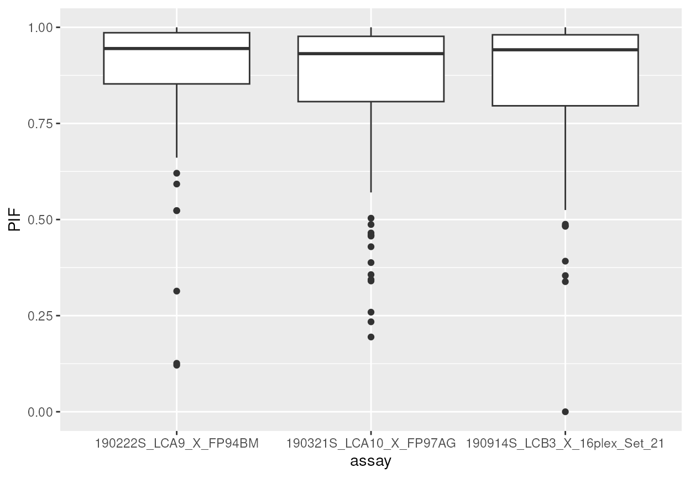

QFeatures in a nutshell
Laurent Gatto
Christophe Vanderaa
26 February 2025
Source:vignettes/QFeatures_nutshell.Rmd
QFeatures_nutshell.RmdThis vignette briefly recaps the main concepts of
QFeatures on which scp relies. More in depth
information is to be found in the QFeatures vignettes.
The QFeatures class
The QFeatures class (Gatto and
Vanderaa (2023)) is based on the
MultiAssayExperiment class that holds a collection of
SummarizedExperiment (or other classes that inherits from
it) objects termed assays. The assays in a
QFeatures object have a hierarchical relation: proteins are
composed of peptides, themselves produced by spectra, as depicted in
figure below.

A more technical representation is shown below, highlighting that
each assay is a SummarizedExperiment (containing the
quantitative data, row and column annotations for each individual
assay), as well as a global sample annotation table, that annotates
cells across all assays.

Those links are stored as part as the QFeatures object
and connect the assays together. We load an example dataset from the
scp package that is formatted as an QFeatures
object and plot those connection.

Accessing the data
The QFeatures class contains all the available and
metadata. We here show how to retrieve those different pieces of
information.
Quantitative data
The quantitative data, stored as matrix-like objects, can be accessed
using the assay function. For example, we here extract the
quantitative data for the first MS batch (and show a subset of it):
assay(scp1, "190321S_LCA10_X_FP97AG")[1:5, ]
#> 190321S_LCA10_X_FP97AG_RI1 190321S_LCA10_X_FP97AG_RI2
#> PSM3773 57895 603.73
#> PSM9078 64889 1481.30
#> PSM9858 58993 489.85
#> PSM11744 75711 539.02
#> PSM21752 0 0.00
#> 190321S_LCA10_X_FP97AG_RI3 190321S_LCA10_X_FP97AG_RI4
#> PSM3773 2787.9 757.17
#> PSM9078 4891.6 597.53
#> PSM9858 2899.4 882.37
#> PSM11744 7292.7 357.90
#> PSM21752 0.0 0.00
#> 190321S_LCA10_X_FP97AG_RI5 190321S_LCA10_X_FP97AG_RI6
#> PSM3773 862.08 1118.80
#> PSM9078 1140.30 1300.10
#> PSM9858 296.60 977.15
#> PSM11744 1091.30 736.87
#> PSM21752 0.00 0.00
#> 190321S_LCA10_X_FP97AG_RI7 190321S_LCA10_X_FP97AG_RI8
#> PSM3773 640.10 1446.10
#> PSM9078 1092.50 1309.40
#> PSM9858 498.60 1437.90
#> PSM11744 712.74 590.75
#> PSM21752 0.00 0.00
#> 190321S_LCA10_X_FP97AG_RI9 190321S_LCA10_X_FP97AG_RI10
#> PSM3773 968.49 648.56
#> PSM9078 1538.40 1014.50
#> PSM9858 857.40 888.01
#> PSM11744 15623.00 298.60
#> PSM21752 0.00 0.00
#> 190321S_LCA10_X_FP97AG_RI11
#> PSM3773 742.53
#> PSM9078 1062.80
#> PSM9858 768.61
#> PSM11744 481.38
#> PSM21752 0.00Note that you can retrieve the list of available assays in a
QFeatures object using the names()
function.
names(scp1)
#> [1] "190321S_LCA10_X_FP97AG" "190222S_LCA9_X_FP94BM"
#> [3] "190914S_LCB3_X_16plex_Set_21" "peptides"
#> [5] "proteins"Feature metadata
For each individual assay, there is feature metadata available. We
extract the list of metadata tables by using rowData() on
the QFeatures object.
rowData(scp1)
#> DataFrameList of length 5
#> names(5): 190321S_LCA10_X_FP97AG 190222S_LCA9_X_FP94BM 190914S_LCB3_X_16plex_Set_21 peptides proteins
rowData(scp1)[["proteins"]]
#> DataFrame with 292 rows and 9 columns
#> protein Match.time.difference
#> <character> <logical>
#> A1A519 A1A519 NA
#> A5D8V6 A5D8V6 NA
#> A5PLK6 A5PLK6 NA
#> A5PLL1 A5PLL1 NA
#> A6NC97 A6NC97 NA
#> ... ... ...
#> REV__CON__ENSEMBL:ENSBTAP00000038253 REV__CON__... NA
#> REV__CON__P06868 REV__CON__... NA
#> REV__CON__Q05443 REV__CON__... NA
#> REV__CON__Q32PI4 REV__CON__... NA
#> REV__CON__Q3MHN5 REV__CON__... NA
#> Match.m.z.difference Match.q.value
#> <logical> <logical>
#> A1A519 NA NA
#> A5D8V6 NA NA
#> A5PLK6 NA NA
#> A5PLL1 NA NA
#> A6NC97 NA NA
#> ... ... ...
#> REV__CON__ENSEMBL:ENSBTAP00000038253 NA NA
#> REV__CON__P06868 NA NA
#> REV__CON__Q05443 NA NA
#> REV__CON__Q32PI4 NA NA
#> REV__CON__Q3MHN5 NA NA
#> Match.score Reporter.PIF Reporter.fraction
#> <logical> <logical> <logical>
#> A1A519 NA NA NA
#> A5D8V6 NA NA NA
#> A5PLK6 NA NA NA
#> A5PLL1 NA NA NA
#> A6NC97 NA NA NA
#> ... ... ... ...
#> REV__CON__ENSEMBL:ENSBTAP00000038253 NA NA NA
#> REV__CON__P06868 NA NA NA
#> REV__CON__Q05443 NA NA NA
#> REV__CON__Q32PI4 NA NA NA
#> REV__CON__Q3MHN5 NA NA NA
#> Potential.contaminant .n
#> <character> <integer>
#> A1A519 1
#> A5D8V6 1
#> A5PLK6 1
#> A5PLL1 1
#> A6NC97 1
#> ... ... ...
#> REV__CON__ENSEMBL:ENSBTAP00000038253 + 1
#> REV__CON__P06868 + 1
#> REV__CON__Q05443 + 1
#> REV__CON__Q32PI4 + 1
#> REV__CON__Q3MHN5 + 1You can also retrieve the names of each rowData column
for all assays with rowDataNames.
rowDataNames(scp1)
#> CharacterList of length 5
#> [["190321S_LCA10_X_FP97AG"]] uid Sequence ... peptide Leading.razor.protein
#> [["190222S_LCA9_X_FP94BM"]] uid Sequence ... peptide Leading.razor.protein
#> [["190914S_LCB3_X_16plex_Set_21"]] uid Sequence ... Leading.razor.protein
#> [["peptides"]] Sequence Length Modifications ... .n Leading.razor.protein
#> [["proteins"]] protein Match.time.difference ... Potential.contaminant .nYou can also get the rowData from different assays in a
single table using the rbindRowData function. It will keep
the common rowData variables to all selected assays
(provided through i).
rbindRowData(scp1, i = 1:5)
#> DataFrame with 1388 rows and 10 columns
#> assay rowname protein Match.time.difference
#> <character> <character> <character> <logical>
#> 1 190321S_LC... PSM3773 P61981 NA
#> 2 190321S_LC... PSM9078 Q8WVN8 NA
#> 3 190321S_LC... PSM9858 P55084 NA
#> 4 190321S_LC... PSM11744 P19099 NA
#> 5 190321S_LC... PSM21752 P52952 NA
#> ... ... ... ... ...
#> 1384 proteins REV__CON__... REV__CON__... NA
#> 1385 proteins REV__CON__... REV__CON__... NA
#> 1386 proteins REV__CON__... REV__CON__... NA
#> 1387 proteins REV__CON__... REV__CON__... NA
#> 1388 proteins REV__CON__... REV__CON__... NA
#> Match.m.z.difference Match.q.value Match.score Reporter.PIF
#> <logical> <logical> <logical> <logical>
#> 1 NA NA NA NA
#> 2 NA NA NA NA
#> 3 NA NA NA NA
#> 4 NA NA NA NA
#> 5 NA NA NA NA
#> ... ... ... ... ...
#> 1384 NA NA NA NA
#> 1385 NA NA NA NA
#> 1386 NA NA NA NA
#> 1387 NA NA NA NA
#> 1388 NA NA NA NA
#> Reporter.fraction Potential.contaminant
#> <logical> <character>
#> 1 NA
#> 2 NA
#> 3 NA
#> 4 NA
#> 5 NA
#> ... ... ...
#> 1384 NA +
#> 1385 NA +
#> 1386 NA +
#> 1387 NA +
#> 1388 NA +Sample metadata
The sample metadata is retrieved using colData on the
QFeatures object.
colData(scp1)
#> DataFrame with 38 rows and 7 columns
#> Set Channel SampleAnnotation
#> <character> <character> <character>
#> 190222S_LCA9_X_FP94BM_RI1 190222S_LC... RI1 carrier_mi...
#> 190222S_LCA9_X_FP94BM_RI2 190222S_LC... RI2 norm
#> 190222S_LCA9_X_FP94BM_RI3 190222S_LC... RI3 unused
#> 190222S_LCA9_X_FP94BM_RI4 190222S_LC... RI4 sc_u
#> 190222S_LCA9_X_FP94BM_RI5 190222S_LC... RI5 sc_0
#> ... ... ... ...
#> 190914S_LCB3_X_16plex_Set_21_RI12 190914S_LC... RI12 sc_m0
#> 190914S_LCB3_X_16plex_Set_21_RI13 190914S_LC... RI13 sc_m0
#> 190914S_LCB3_X_16plex_Set_21_RI14 190914S_LC... RI14 sc_m0
#> 190914S_LCB3_X_16plex_Set_21_RI15 190914S_LC... RI15 sc_m0
#> 190914S_LCB3_X_16plex_Set_21_RI16 190914S_LC... RI16 sc_m0
#> SampleType lcbatch sortday
#> <character> <character> <character>
#> 190222S_LCA9_X_FP94BM_RI1 Carrier LCA9 s8
#> 190222S_LCA9_X_FP94BM_RI2 Reference LCA9 s8
#> 190222S_LCA9_X_FP94BM_RI3 Unused LCA9 s8
#> 190222S_LCA9_X_FP94BM_RI4 Monocyte LCA9 s8
#> 190222S_LCA9_X_FP94BM_RI5 Blank LCA9 s8
#> ... ... ... ...
#> 190914S_LCB3_X_16plex_Set_21_RI12 Macrophage LCB3 s9
#> 190914S_LCB3_X_16plex_Set_21_RI13 Macrophage LCB3 s9
#> 190914S_LCB3_X_16plex_Set_21_RI14 Macrophage LCB3 s9
#> 190914S_LCB3_X_16plex_Set_21_RI15 Macrophage LCB3 s9
#> 190914S_LCB3_X_16plex_Set_21_RI16 Macrophage LCB3 s9
#> digest
#> <character>
#> 190222S_LCA9_X_FP94BM_RI1 N
#> 190222S_LCA9_X_FP94BM_RI2 N
#> 190222S_LCA9_X_FP94BM_RI3 N
#> 190222S_LCA9_X_FP94BM_RI4 N
#> 190222S_LCA9_X_FP94BM_RI5 N
#> ... ...
#> 190914S_LCB3_X_16plex_Set_21_RI12 R
#> 190914S_LCB3_X_16plex_Set_21_RI13 R
#> 190914S_LCB3_X_16plex_Set_21_RI14 R
#> 190914S_LCB3_X_16plex_Set_21_RI15 R
#> 190914S_LCB3_X_16plex_Set_21_RI16 RNote that you can easily access a colData column using
the $ operator. See here how we extract the sample types
from the colData.
scp1$SampleType
#> [1] "Carrier" "Reference" "Unused" "Monocyte" "Blank"
#> [6] "Monocyte" "Macrophage" "Macrophage" "Macrophage" "Macrophage"
#> [11] "Macrophage" "Carrier" "Reference" "Unused" "Macrophage"
#> [16] "Monocyte" "Macrophage" "Macrophage" "Macrophage" "Macrophage"
#> [21] "Macrophage" "Macrophage" "Carrier" "Reference" "Unused"
#> [26] "Unused" "Macrophage" "Macrophage" "Blank" "Monocyte"
#> [31] "Macrophage" "Monocyte" "Blank" "Macrophage" "Macrophage"
#> [36] "Macrophage" "Macrophage" "Macrophage"Subsetting the data
There are three dimensions we want to subset for:
- Assays
- Samples
- Features
Therefore, QFeatures support a three-index subsetting.
This is performed through the simple bracket method
[feature, sample, assay].
Subset assays
Suppose that we want to focus only on the first MS batch
(190321S_LCA10_X_FP97AG) for separate processing of the
data. Subsetting the QFeatures object for that assay is
simply:
scp1[, , "190321S_LCA10_X_FP97AG"]
#> harmonizing input:
#> removing 103 sampleMap rows not in names(experiments)
#> removing 27 colData rownames not in sampleMap 'primary'
#> An instance of class QFeatures containing 1 set(s):
#> [1] 190321S_LCA10_X_FP97AG: SingleCellExperiment with 166 rows and 11 columnsAn alternative that results in exactly the same output is using the
subsetByAssay method.
subsetByAssay(scp1, "190321S_LCA10_X_FP97AG")
#> harmonizing input:
#> removing 103 sampleMap rows not in names(experiments)
#> removing 27 colData rownames not in sampleMap 'primary'
#> An instance of class QFeatures containing 1 set(s):
#> [1] 190321S_LCA10_X_FP97AG: SingleCellExperiment with 166 rows and 11 columnsSubset samples
Subsetting samples is often performed after sample QC where we want to keep only quality samples and sample of interest. In our example, the different samples are either technical controls or single-cells (macrophages and monocytes). Suppose we are only interested in macrophages, we can subset the data as follows:
scp1[, scp1$SampleType == "Macrophage", ]
#> An instance of class QFeatures containing 5 set(s):
#> [1] 190321S_LCA10_X_FP97AG: SingleCellExperiment with 166 rows and 7 columns
#> [2] 190222S_LCA9_X_FP94BM: SingleCellExperiment with 176 rows and 5 columns
#> [3] 190914S_LCB3_X_16plex_Set_21: SingleCellExperiment with 215 rows and 8 columns
#> [4] peptides: SingleCellExperiment with 539 rows and 20 columns
#> [5] proteins: SingleCellExperiment with 292 rows and 20 columnsAn alternative that results in exactly the same output is using the
subsetByColData method.
subsetByColData(scp1, scp1$SampleType == "Macrophage")
#> An instance of class QFeatures containing 5 set(s):
#> [1] 190321S_LCA10_X_FP97AG: SingleCellExperiment with 166 rows and 7 columns
#> [2] 190222S_LCA9_X_FP94BM: SingleCellExperiment with 176 rows and 5 columns
#> [3] 190914S_LCB3_X_16plex_Set_21: SingleCellExperiment with 215 rows and 8 columns
#> [4] peptides: SingleCellExperiment with 539 rows and 20 columns
#> [5] proteins: SingleCellExperiment with 292 rows and 20 columnsSubset features
Subsetting for features does more than simply subsetting for the
features of interest, it will also take the features that are linked to
that feature. Here is an example, suppose we are interested in the
Q02878 protein.
scp1["Q02878", , ]
#> An instance of class QFeatures containing 5 set(s):
#> [1] 190321S_LCA10_X_FP97AG: SingleCellExperiment with 9 rows and 11 columns
#> [2] 190222S_LCA9_X_FP94BM: SingleCellExperiment with 10 rows and 11 columns
#> [3] 190914S_LCB3_X_16plex_Set_21: SingleCellExperiment with 0 rows and 16 columns
#> [4] peptides: SingleCellExperiment with 11 rows and 38 columns
#> [5] proteins: SingleCellExperiment with 1 rows and 38 columnsYou can see it indeed retrieved that protein from the
proteins assay, but it also retrieved 11 associated
peptides in the peptides assay and 19 associated PSMs in 2
different MS runs.
An alternative that results in exactly the same output is using the
subsetByColData method.
subsetByFeature(scp1, "Q02878")
#> An instance of class QFeatures containing 5 set(s):
#> [1] 190321S_LCA10_X_FP97AG: SingleCellExperiment with 9 rows and 11 columns
#> [2] 190222S_LCA9_X_FP94BM: SingleCellExperiment with 10 rows and 11 columns
#> [3] 190914S_LCB3_X_16plex_Set_21: SingleCellExperiment with 0 rows and 16 columns
#> [4] peptides: SingleCellExperiment with 11 rows and 38 columns
#> [5] proteins: SingleCellExperiment with 1 rows and 38 columnsYou can also subset features based on the rowData. This
is performed by filterFeatures. For example, we want to
remove features that are associated to reverse sequence hits.
filterFeatures(scp1, ~ Reverse != "+")
#> 'Reverse' found in 4 out of 5 assay(s)
#> No filter applied to the following assay(s) because one or more filtering variables are missing in the rowData: proteins.
#> You can control whether to remove or keep the features using the 'keep' argument (see '?filterFeature').
#> An instance of class QFeatures containing 5 set(s):
#> [1] 190321S_LCA10_X_FP97AG: SingleCellExperiment with 126 rows and 11 columns
#> [2] 190222S_LCA9_X_FP94BM: SingleCellExperiment with 132 rows and 11 columns
#> [3] 190914S_LCB3_X_16plex_Set_21: SingleCellExperiment with 176 rows and 16 columns
#> [4] peptides: SingleCellExperiment with 422 rows and 38 columns
#> [5] proteins: SingleCellExperiment with 0 rows and 38 columnsNote however that if an assay is missing the variable that is used to
filter the data (in this case the proteins assay), then all
features for that assay are removed.
You can also subset the data based on the feature missingness using
filterNA. In this example, we filter out proteins with more
than 70 % missing data.
filterNA(scp1, i = "proteins", pNA = 0.7)
#> An instance of class QFeatures containing 5 set(s):
#> [1] 190321S_LCA10_X_FP97AG: SingleCellExperiment with 166 rows and 11 columns
#> [2] 190222S_LCA9_X_FP94BM: SingleCellExperiment with 176 rows and 11 columns
#> [3] 190914S_LCB3_X_16plex_Set_21: SingleCellExperiment with 215 rows and 16 columns
#> [4] peptides: SingleCellExperiment with 539 rows and 38 columns
#> [5] proteins: SingleCellExperiment with 105 rows and 38 columnsCommon processing steps
We here provide a list of common processing steps that are
encountered in single-cell proteomics data processing and that are
already available in the QFeatures package.
All functions below require the user to select one or more assays
from the QFeatures object. This is passed through the
i argument. Note that some datasets may contain hundreds of
assays and providing the assay selection manually can become cumbersome.
We therefore suggest the user to use regular expression (aka regex) to
chose from the names() of the QFeautres
object. A detailed cheatsheet about regex in R can be found here.
Missing data assignment
It often occurs that in MS experiements, 0 values are not true zeros
but rather signal that is too weak to be detected. Therefore, it is
advised to consider 0 values as missing data (NA). You can
use zeroIsNa to automatically convert 0 values to
NA in assays of interest. For instance, we here replace
missing data in the peptides assay.
Feature aggregation
Shotgun proteomics analyses, bulk as well as single-cell, acquire and
quantify peptides. However, biological inference is often performed at
protein level. Protein quantitations can be estimated through feature
aggregation. This is performed by aggregateFeatures, a
function that takes an assay from the Qfeatures object and
that aggregates its features with respect to a grouping variable in the
rowData (fcol) and an aggregation
function.
aggregateFeatures(scp1, i = "190321S_LCA10_X_FP97AG", fcol = "protein",
name = "190321S_LCA10_X_FP97AG_aggr",
fun = MsCoreUtils::robustSummary)
#> Your row data contain missing values. Please read the relevant
#> section(s) in the aggregateFeatures manual page regarding the effects
#> of missing values on data aggregation.
#> Warning in rlm.default(X, expression, ...): 'rlm' failed to converge in 20
#> steps
#> An instance of class QFeatures containing 6 set(s):
#> [1] 190321S_LCA10_X_FP97AG: SingleCellExperiment with 166 rows and 11 columns
#> [2] 190222S_LCA9_X_FP94BM: SingleCellExperiment with 176 rows and 11 columns
#> [3] 190914S_LCB3_X_16plex_Set_21: SingleCellExperiment with 215 rows and 16 columns
#> [4] peptides: SingleCellExperiment with 539 rows and 38 columns
#> [5] proteins: SingleCellExperiment with 292 rows and 38 columns
#> [6] 190321S_LCA10_X_FP97AG_aggr: SingleCellExperiment with 100 rows and 11 columnsYou can see that the aggregated function is added as a new assay to
the QFeatures object. Note also that, under the hood,
aggregateFeatures keeps track of the relationship between
the features of the newly aggregated assay and its parent.
Normalization
An ubiquituous step that is performed in biological data analysis is
normalization that is meant to remove undesired variability and to make
different samples comparable. The normalize function offers
an interface to a wide variety of normalization methods. See
?MsCoreUtils::normalize_matrix for more details about the
available normalization methods. Below, we normalize the samples so that
they are mean centered.
normalize(scp1, "proteins", method = "center.mean",
name = "proteins_mcenter")
#> An instance of class QFeatures containing 6 set(s):
#> [1] 190321S_LCA10_X_FP97AG: SingleCellExperiment with 166 rows and 11 columns
#> [2] 190222S_LCA9_X_FP94BM: SingleCellExperiment with 176 rows and 11 columns
#> [3] 190914S_LCB3_X_16plex_Set_21: SingleCellExperiment with 215 rows and 16 columns
#> [4] peptides: SingleCellExperiment with 539 rows and 38 columns
#> [5] proteins: SingleCellExperiment with 292 rows and 38 columns
#> [6] proteins_mcenter: SingleCellExperiment with 292 rows and 38 columnsOther custom normalization can be applied using the
sweep method, where normalization factors have to be
supplied manually. As an example, we here normalize the samples using a
scaled size factor.
sf <- colSums(assay(scp1, "proteins"), na.rm = TRUE) / 1E4
sweep(scp1, i = "proteins",
MARGIN = 2, ## 1 = by feature; 2 = by sample
STATS = sf, FUN = "/",
name = "proteins_sf")
#> An instance of class QFeatures containing 6 set(s):
#> [1] 190321S_LCA10_X_FP97AG: SingleCellExperiment with 166 rows and 11 columns
#> [2] 190222S_LCA9_X_FP94BM: SingleCellExperiment with 176 rows and 11 columns
#> [3] 190914S_LCB3_X_16plex_Set_21: SingleCellExperiment with 215 rows and 16 columns
#> [4] peptides: SingleCellExperiment with 539 rows and 38 columns
#> [5] proteins: SingleCellExperiment with 292 rows and 38 columns
#> [6] proteins_sf: SingleCellExperiment with 292 rows and 38 columnsLog transformation
The QFeatures package also provide the
logTransform function to facilitate the transformation of
the quantitative data. We here show its usage by transforming the
protein data using a base 2 logarithm with a pseudo-count of one.
logTransform(scp1, i = "proteins", base = 2, pc = 1,
name = "proteins_log")
#> An instance of class QFeatures containing 6 set(s):
#> [1] 190321S_LCA10_X_FP97AG: SingleCellExperiment with 166 rows and 11 columns
#> [2] 190222S_LCA9_X_FP94BM: SingleCellExperiment with 176 rows and 11 columns
#> [3] 190914S_LCB3_X_16plex_Set_21: SingleCellExperiment with 215 rows and 16 columns
#> [4] peptides: SingleCellExperiment with 539 rows and 38 columns
#> [5] proteins: SingleCellExperiment with 292 rows and 38 columns
#> [6] proteins_log: SingleCellExperiment with 292 rows and 38 columnsImputation
Finally, QFeatures offers an interface to a wide variety
of imputation methods to replace missing data by estimated values. The
list of available methods is given by
?MsCoreUtils::impute_matrix. We demonstrate the use of this
function by replacing missing data using KNN imputation.
anyNA(assay(scp1, "proteins"))
#> [1] TRUE
scp1 <- impute(scp1, i = "proteins", method ="knn", k = 3)
#> Loading required namespace: impute
#> Imputing along margin 1 (features/rows).
#> Warning in knnimp(x, k, maxmiss = rowmax, maxp = maxp): 284 rows with more than 50 % entries missing;
#> mean imputation used for these rows
anyNA(assay(scp1, "proteins"))
#> [1] TRUEData visualization
Visualization of the feature and sample metadata is rather
straightforward since those are stored as tables (see section
Accessing the data). From those tables, any visualization tool
can be applied. Note however that using ggplot2 require
data.frames or tibbles but
rowData and colData are stored as
DFrames objects. You can easily convert one data format to
another. For example, we plot the parental ion fraction (measure of
spectral purity) for each of the three MS batches.
rd <- rbindRowData(scp1, i = 1:3)
library("ggplot2")
ggplot(data.frame(rd)) +
aes(y = PIF,
x = assay) +
geom_boxplot()
#> Warning: Removed 64 rows containing non-finite outside the scale range
#> (`stat_boxplot()`).
Combining the metadata and the quantitative data is more challenging
since the risk of data mismatch is increased. The QFeatures
package therefore provides th longFormat function to
transform a QFeatures object in a long DFrame
table. For instance, we plot the quantitative data distribution for the
first assay according to the acquisition channel index and colour with
respect to the sample type. Both pieces of information are taken from
the colData, so we provide them as
colvars.
lf <- longFormat(scp1[, , 1],
colvars = c("SampleType", "Channel"))
#> harmonizing input:
#> removing 141 sampleMap rows not in names(experiments)
#> removing 27 colData rownames not in sampleMap 'primary'
#> Warning in lifeCycle("longForm", package = "MultiAssayExperiment", title = "longFormat"): 'longFormat' is deprecated.
#> Use 'longForm' instead.
#> See help('longFormat-deprecated').
ggplot(data.frame(lf)) +
aes(x = Channel,
y = value,
colour = SampleType) +
geom_boxplot()
A more in-depth tutorial about data visualization from a
QFeatures object is provided in the QFeautres
visualization vignette.
Session information
R Under development (unstable) (2025-02-15 r87726)
Platform: x86_64-pc-linux-gnu
Running under: Ubuntu 24.04.2 LTS
Matrix products: default
BLAS: /usr/lib/x86_64-linux-gnu/openblas-pthread/libblas.so.3
LAPACK: /usr/lib/x86_64-linux-gnu/openblas-pthread/libopenblasp-r0.3.26.so; LAPACK version 3.12.0
locale:
[1] LC_CTYPE=en_US.UTF-8 LC_NUMERIC=C
[3] LC_TIME=en_US.UTF-8 LC_COLLATE=en_US.UTF-8
[5] LC_MONETARY=en_US.UTF-8 LC_MESSAGES=en_US.UTF-8
[7] LC_PAPER=en_US.UTF-8 LC_NAME=C
[9] LC_ADDRESS=C LC_TELEPHONE=C
[11] LC_MEASUREMENT=en_US.UTF-8 LC_IDENTIFICATION=C
time zone: UTC
tzcode source: system (glibc)
attached base packages:
[1] stats4 stats graphics grDevices utils datasets methods
[8] base
other attached packages:
[1] ggplot2_3.5.1 scp_1.17.1
[3] QFeatures_1.17.4 MultiAssayExperiment_1.33.9
[5] SummarizedExperiment_1.37.0 Biobase_2.67.0
[7] GenomicRanges_1.59.1 GenomeInfoDb_1.43.4
[9] IRanges_2.41.3 S4Vectors_0.45.4
[11] BiocGenerics_0.53.6 generics_0.1.3
[13] MatrixGenerics_1.19.1 matrixStats_1.5.0
[15] BiocStyle_2.35.0
loaded via a namespace (and not attached):
[1] tidyselect_1.2.1 farver_2.1.2
[3] dplyr_1.1.4 fastmap_1.2.0
[5] SingleCellExperiment_1.29.1 lazyeval_0.2.2
[7] nipals_1.0 digest_0.6.37
[9] lifecycle_1.0.4 cluster_2.1.8
[11] ProtGenerics_1.39.2 magrittr_2.0.3
[13] compiler_4.5.0 rlang_1.1.5
[15] sass_0.4.9 tools_4.5.0
[17] igraph_2.1.4 yaml_2.3.10
[19] knitr_1.49 labeling_0.4.3
[21] S4Arrays_1.7.3 htmlwidgets_1.6.4
[23] DelayedArray_0.33.6 plyr_1.8.9
[25] RColorBrewer_1.1-3 abind_1.4-8
[27] withr_3.0.2 purrr_1.0.4
[29] desc_1.4.3 grid_4.5.0
[31] colorspace_2.1-1 scales_1.3.0
[33] MASS_7.3-64 cli_3.6.4
[35] rmarkdown_2.29 crayon_1.5.3
[37] ragg_1.3.3 metapod_1.15.0
[39] httr_1.4.7 reshape2_1.4.4
[41] BiocBaseUtils_1.9.0 cachem_1.1.0
[43] stringr_1.5.1 impute_1.81.0
[45] AnnotationFilter_1.31.0 BiocManager_1.30.25
[47] XVector_0.47.2 vctrs_0.6.5
[49] Matrix_1.7-2 jsonlite_1.9.0
[51] slam_0.1-55 bookdown_0.42
[53] IHW_1.35.0 ggrepel_0.9.6
[55] clue_0.3-66 systemfonts_1.2.1
[57] tidyr_1.3.1 jquerylib_0.1.4
[59] glue_1.8.0 pkgdown_2.1.1.9000
[61] stringi_1.8.4 gtable_0.3.6
[63] UCSC.utils_1.3.1 munsell_0.5.1
[65] lpsymphony_1.35.0 tibble_3.2.1
[67] pillar_1.10.1 htmltools_0.5.8.1
[69] GenomeInfoDbData_1.2.13 R6_2.6.1
[71] textshaping_1.0.0 evaluate_1.0.3
[73] lattice_0.22-6 bslib_0.9.0
[75] Rcpp_1.0.14 fdrtool_1.2.18
[77] SparseArray_1.7.6 xfun_0.51
[79] MsCoreUtils_1.19.0 fs_1.6.5
[81] pkgconfig_2.0.3 License
This vignette is distributed under a CC BY-SA license license.